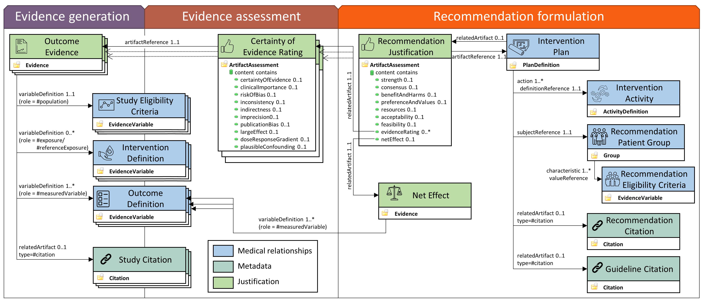

Clinical Practice Guidelines (CPG) on EBMonFHIR
0.2.0-snapshot - ci-build
Clinical Practice Guidelines (CPG) on EBMonFHIR
0.2.0-snapshot - ci-build
Clinical Practice Guidelines (CPG) on EBMonFHIR - Local Development build (v0.2.0-snapshot). See the Directory of published versions
| Computable Name: | ||||
This implementation guide is currently being updated and may not represent the current development status of the CPG-on-EBMonFHIR project.
This implementation guide describes an evidence-based medicine on FHIR (EBMonFHIR) approach to represent clinical practice guidelines using FHIR resources.
Apart from representing the actual treatment recommendations provided by the guidelines, the evidence generation and evidence assessment components of evidence-based guideline development is also represented. The representation of clinical practice guidelines is oriented to the PICO (population, intervention, comparator, outcome) framework.
The following elements are required to represent a clinical practice guideline recommendation for automated clinical decision support systems:
| Name | FHIR Base Resource | Description | References |
|---|---|---|---|
| Recommendation Plan | PlanDefinition | Description of a recommended intervention addressed in a specific guideline recommendation. | Intervention Activities specified in the guideline recommendation; Recommendation Eligibility Criteria defining the group of patients to which the recommendation applies to; Recommendation Justification providing the justification of the recommendation; Guideline Citation, Recommendation Citation. |
| Recommendation Action | ActivityDefinition | Definition of an activity that is part of an intervention in the context of a clinical practice guideline recommendation. | - |
| Recommendation Eligibility Criteria | EvidenceVariable | Description of the population to which a specific guideline recommendation applies. | - |
The following profiles are used to represent the evidence upon which a clinical practice guideline recommendation is based:
| Name | FHIR Base Resource | Description | References |
|---|---|---|---|
| Outcome Evidence | Evidence | Evidence statistics generated from a single study or systematic review regarding a clinical question. | Study Eligibility Criteria, Intervention Definition, Outcome Definition, Study Citation |
| Study Eligibility Criteria | EvidenceVariable | Definition of the patient group for which evidence was generated. | - |
| Intervention Definition | EvidenceVariable | Definition of an intervention or comparison with respect to which evidence was generated. | - |
| Outcome Definition | EvidenceVariable | Definition of the outcome for which evidence was generated. | - |
| Study Citation | Citation | Citation of the study or systematic review. | - |
The following profiles are used to represent the assessment of evidence which justify the recommendation:
| Name | FHIR Base Resource | Description | References |
|---|---|---|---|
| Recommendation Justification | ArtifactAssessment | Rating of the recommendation given all evidence for all considered outcomes. | Recommendation Plan, Certainty of Evidence Rating, Net Effect Estimate |
| Certainty of Evidence Rating | ArtifactAssessment | Rating of the evidence for individual outcomes. | Outcome Evidence |
| Net Effect Estimate | EvidenceVariable | Description of the net effect of a guideline recommendation. | (Expected) Outcomes of a guideline recommendation. |
Additionally, the following profiles are used to bundle recommendations and resources:
| Name | FHIR Base Resource | Description | References |
|---|---|---|---|
| Clinical Practice Guideline | Composition | Composition of several individual guideline recommendations | Recommendation Plan, Guideline Citation |
| Guideline Bundle | Bundle | Bundle of all resources of a single clinical practice guideline. | All other resources in this IG. |
The following diagram provides an overview of the different profiles used in this implementation guide and their relationship:

The following diagram provides a more detailed view on the important fields of the profiles and their relationships. For a consistent detailed view, please visit the pages of the individual profiles.
In short, a single guideline recommendation describes a specific group of patients (the “population”), for which a certain treatment (or the absence from treatment) is recommended (the “intervention”). As the guideline recommendations are based on meta-analyses of clinical studies, the expected outcome of the recommended intervention on the patients may also be encoded. This additionally allows to specify the net effect of the recommendation by weighting the individual outcomes by their relative importance. For more information on the net effect, see Alper, B. S. et al. Defining certainty of net benefit: a GRADE concept paper. BMJ Open 9, e027445 (2019).
IG © 2021+ Charité - Universitätsmedizin Berlin. Package cpg.ceosys.de#0.2.0-snapshot based on FHIR 5.0.0-cibuild. Generated 2022-06-09
Links: Table of Contents |
QA Report |
Issues |
Submit an issue |
Version History |
 |
|